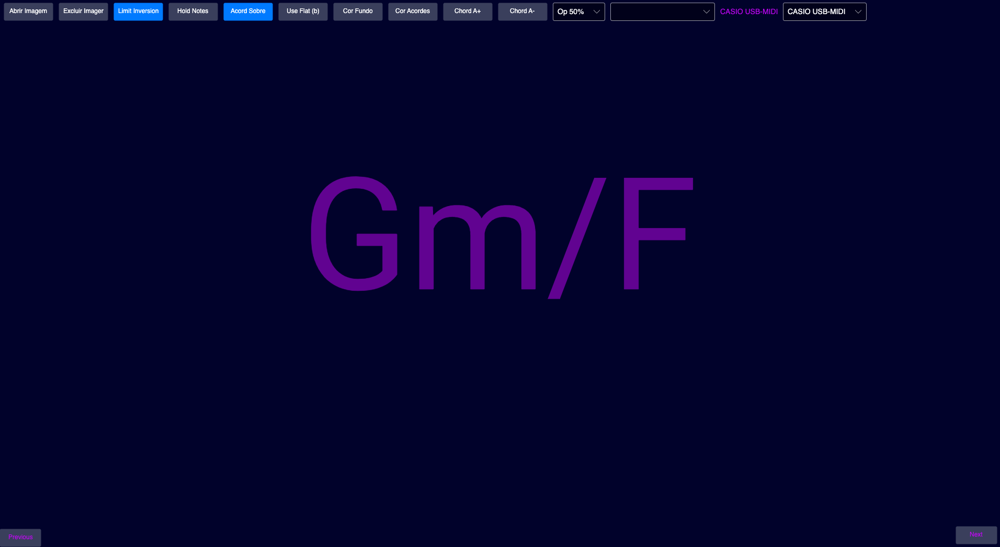
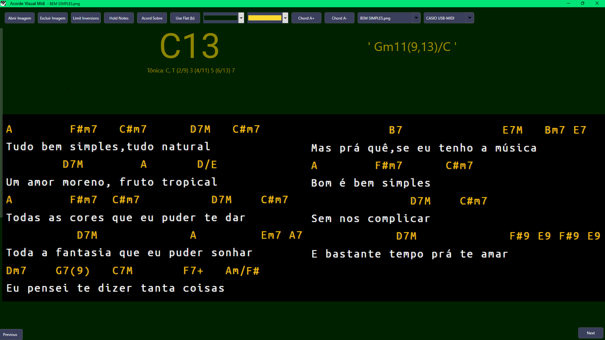
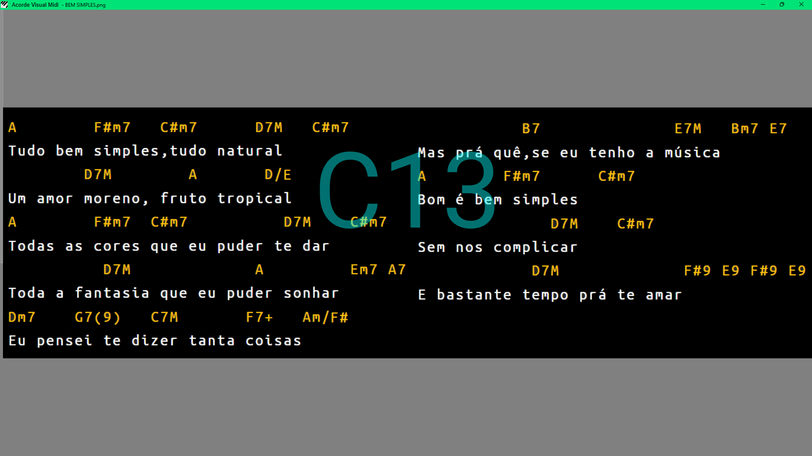
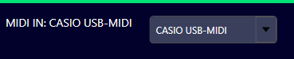

O software identifica oitavas dobradas no grave e separa a região do baixo do corpo do acorde. Resultado: cifras limpas como C/Bb mesmo com o baixo dobrado.
Percebe choques entre notas (como 3ª e 4ª justa) e prioriza automaticamente as interpretações de acordes mais estáveis e musicais.
Diferencia nuances teóricas como a 5# e a 13b dependendo da estrutura harmônica presente.
Abaixo, tela da versão para macOS operando no modo "Acorde Sobre", com interface limpa e foco total na identificação rápida.

Abaixo, tela da versão para Windows 11 (Versão igual ou superior a 24H2) com imagem de cifras carregada e no modo Split, que mostra detalhadamente os intervalos e candidatos a acorde.

Ao selecionar Acorde Sobre, o nome do acorde aparecerá no tamanho, cor e transparência que você definir, projetado diretamente sobre a sua imagem ou cifra carregada. Isso permite ler a música e monitorar o Acorde simultaneamente.

Note que os controles somem após alguns segundos de inatividade, limpando o palco para a sua música. O recurso Hold Notes segura o acorde na tela para sua análise.

Caso não consiga carregar seu dispositivo Midi verifique se sua versão do Windows 11 é igual ou superior a versão do Windows 11 é igual ou superior a (24H2),a partir desta o Windows suporta que o mesmo Device (teclado Midi) seja acessado por mais de um aplicativo MIDI facilitando a conexão com Kontakt, DAWs e outros instrumentos virtuais simultaneamente.
O Acorde Visual Midi é GRATUITO e Open Source.
Apoie o projeto via Pix: rycobuckton@gmail.com
Acredito na democratização do ensino musical.
O programa está disponível no GitHub para verificações, inclusive de vírus. Por ser um software novo e independente, sem as assinaturas digitais pagas exigidas pela Microsoft ou Apple, os sistemas operacionais podem gerar falsos alertas de segurança. O código é aberto para total transparência e pode ser auditado por qualquer usuário. "Software em desenvolvimento ativo. O sistema já identifica uma gama expressiva de acordes e extensões, tendo sido testado com milhares de combinações porem não posso garantir reconhecimento total dos acordes existentes."